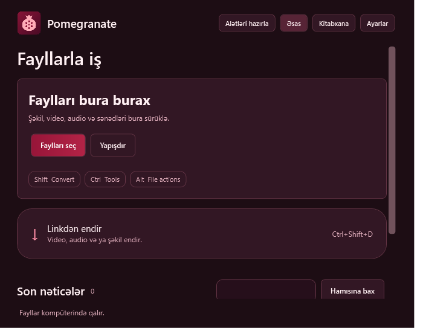
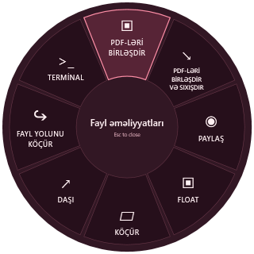

Windows x64
Fayllarını
özün çevir.
PDF-ləri birləşdir, şəkilləri kəs, videodan səs çıxar. Faylı sürüklə və lazım olan əməliyyatı seç.
Windows üçün yüklə
Windows x64
PDF-ləri birləşdir, şəkilləri kəs, videodan səs çıxar. Faylı sürüklə və lazım olan əməliyyatı seç.
Windows üçün yüklə
Explorer və ya masaüstündən faylı sürükləyərkən klaviaturadan uyğun düyməni bas. Dairədə həmin fayla uyğun seçimləri görəcəksən.

Nümunə faylı dairədəki seçimə sürüklə və ya klikləyib əməliyyatı seç. Shift, Ctrl və Alt menyunu dəyişir.
Bu sınaq əməliyyatları canlandırır. Fayl yaradılmır və yüklənmir.
Pomegranate.exe faylını aç.Media, Office və veb yükləmələri üçün proqramın içində Alətləri hazırla bölməsini aç.
Bu buraxılış imzasızdır. Windows ilk açılışda SmartScreen bildirişi göstərə bilər.